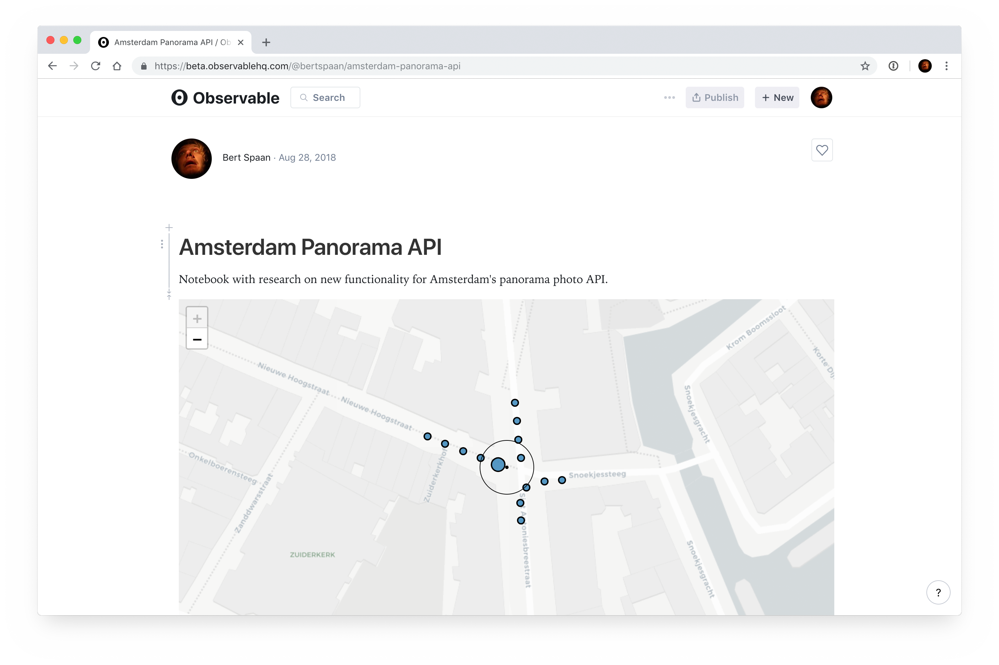
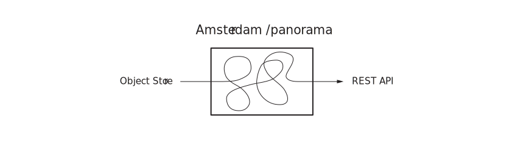
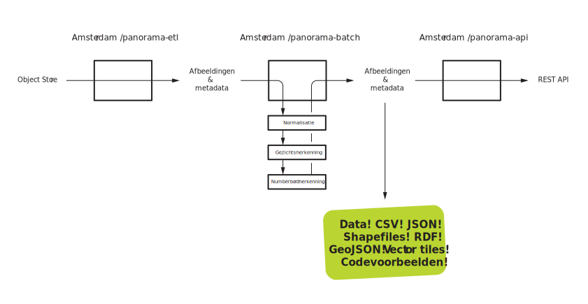
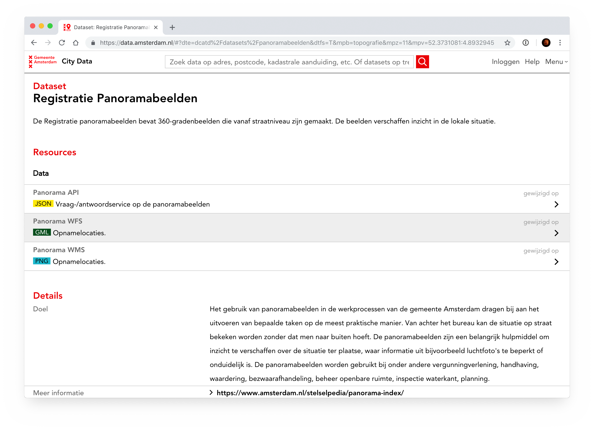
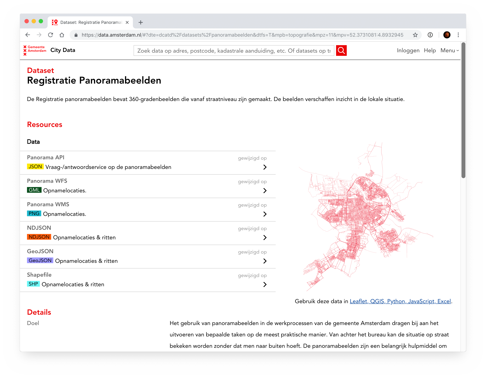
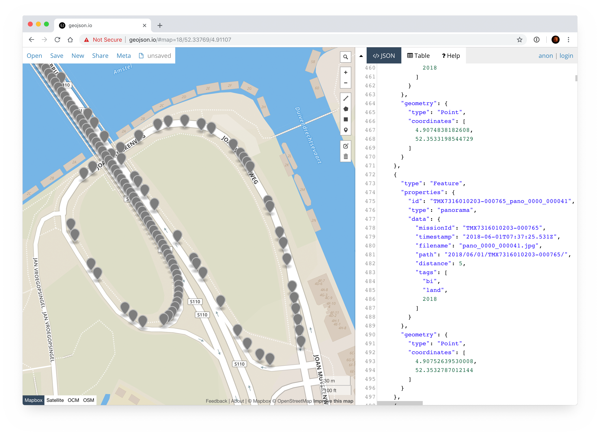

Panorama-API: Nieuwe Versie
- selectie op missietype (WOZ, BI) en jaar;
- terwijl het kaartbeeld er netjes uit blijft zien.
CREATE MATERIALIZED VIEW panoramas_recent_all AS
SELECT * FROM panoramas_panorama pano
WHERE
NOT EXISTS (
SELECT *
FROM public.panoramas_panorama newer
WHERE
pano.id != newer.id AND
pano.surface_type = newer.surface_type AND
ST_DWithin(newer._geolocation_2d_rd, pano._geolocation_2d_rd, 4.3)
)
- Niet flexibel;
- elk jaar komt ’r een jaar bij;
- missietypes, nog meer materialized views 😩;
- duurt lang om te maken — O(n²)


Huidige situatie: één project op GitHub

Mogelijke verbetering

Huidige situatie: alleen webservices in datacatalogus

Mogelijke verbetering: ook data! CSV! GeoJSON! NDJSON!

Opnamelocaties op geojson.io
 Opnamelocaties in QGIS
Opnamelocaties in QGIS
 Vector tiles!
Vector tiles!
SELECT * FROM panoramas_panorama pano
WHERE
NOT EXISTS (
SELECT *
FROM public.panoramas_panorama newer
WHERE
pano.id != newer.id AND
pano.surface_type = newer.surface_type AND
ST_DWithin(newer._geolocation_2d_rd, pano._geolocation_2d_rd,
pano.mission_distance - 0.7) AND
ST_DWithin(pano._geolocation_2d_rd, ${point}, ${radius}) AND
newer.mission_type = ${mission_type}
) AND
ST_DWithin(pano._geolocation_2d_rd, ${point}, ${radius} AND
mission_type = ${mission_type}
ORDER BY pano._geolocation_2d_rd <-> ${point};
- Alle query’s met nieuwe filters snel, meestal rond 10ms;
- alleen WMS-query’s met grote oppervlakte (m2) langzamer dan voorheen;
- nog doen: cachen met MapProxy!
Ideeën voor de toekomst!
{"id":"TMX7315120208-000020_pano_0000_000000","type":"panorama","data":{"missionId":"TMX7315120208-000020","timestamp":"2016-03-17T10:45:10.425Z","filename":"pano_0000_000000.jpg","path":"2016/03/17/TMX7315120208-000020/","distance":5,"tags":["bi","land",2016]},"geometry":{"type":"Point","coordinates":[4.9891699395161,52.2997361180023]}}
{"id":"TMX7315120208-000020_pano_0000_000001","type":"panorama","data":{"missionId":"TMX7315120208-000020","timestamp":"2016-03-17T10:45:10.775Z","filename":"pano_0000_000001.jpg","path":"2016/03/17/TMX7315120208-000020/","distance":5,"tags":["bi","land",2016]},"geometry":{"type":"Point","coordinates":[4.98917103467779,52.2996911002726]}}
{"id":"TMX7315120208-000020_pano_0000_000002","type":"panorama","data":{"missionId":"TMX7315120208-000020","timestamp":"2016-03-17T10:45:11.125Z","filename":"pano_0000_000002.jpg","path":"2016/03/17/TMX7315120208-000020/","distance":5,"tags":["bi","land",2016]},"geometry":{"type":"Point","coordinates":[4.98917132055538,52.2996461978532]}}
{"id":"TMX7315120208-000020_pano_0000_000003","type":"panorama","data":{"missionId":"TMX7315120208-000020","timestamp":"2016-03-17T10:45:11.475Z","filename":"pano_0000_000003.jpg","path":"2016/03/17/TMX7315120208-000020/","distance":5,"tags":["bi","land",2016]},"geometry":{"type":"Point","coordinates":[4.98917161794814,52.2996013466301]}}
{"id":"TMX7315120208-000020_pano_0000_000004","type":"panorama","data":{"missionId":"TMX7315120208-000020","timestamp":"2016-03-17T10:45:11.825Z","filename":"pano_0000_000004.jpg","path":"2016/03/17/TMX7315120208-000020/","distance":5,"tags":["bi","land",2016]},"geometry":{"type":"Point","coordinates":[4.98917198416563,52.2995564668852]}}
{"id":"TMX7315120208-000020_pano_0000_000005","type":"panorama","data":{"missionId":"TMX7315120208-000020","timestamp":"2016-03-17T10:45:12.175Z","filename":"pano_0000_000005.jpg","path":"2016/03/17/TMX7315120208-000020/","distance":5,"tags":["bi","land",2016]},"geometry":{"type":"Point","coordinates":[4.98917264340207,52.2995112554671]}}
{"id":"TMX7315120208-000020_pano_0000_000006","type":"panorama","data":{"missionId":"TMX7315120208-000020","timestamp":"2016-03-17T10:45:12.520Z","filename":"pano_0000_000006.jpg","path":"2016/03/17/TMX7315120208-000020/","distance":5,"tags":["bi","land",2016]},"geometry":{"type":"Point","coordinates":[4.98917380752767,52.2994662417656]}}
{"id":"TMX7315120208-000020_pano_0000_000007","type":"panorama","data":{"missionId":"TMX7315120208-000020","timestamp":"2016-03-17T10:45:12.860Z","filename":"pano_0000_000007.jpg","path":"2016/03/17/TMX7315120208-000020/","distance":5,"tags":["bi","land",2016]},"geometry":{"type":"Point","coordinates":[4.98917507183778,52.2994214657905]}}
{"id":"TMX7315120208-000020_pano_0000_000008","type":"panorama","data":{"missionId":"TMX7315120208-000020","timestamp":"2016-03-17T10:45:13.200Z","filename":"pano_0000_000008.jpg","path":"2016/03/17/TMX7315120208-000020/","distance":5,"tags":["bi","land",2016]},"geometry":{"type":"Point","coordinates":[4.98917596033205,52.2993764601732]}}
{"id":"TMX7315120208-000020_pano_0000_000009","type":"panorama","data":{"missionId":"TMX7315120208-000020","timestamp":"2016-03-17T10:45:13.540Z","filename":"pano_0000_000009.jpg","path":"2016/03/17/TMX7315120208-000020/","distance":5,"tags":["bi","land",2016]},"geometry":{"type":"Point","coordinates":[4.98917728017018,52.2993311922257]}}
{"id":"TMX7315120208-000020_pano_0000_000010","type":"panorama","data":{"missionId":"TMX7315120208-000020","timestamp":"2016-03-17T10:45:13.875Z","filename":"pano_0000_000010.jpg","path":"2016/03/17/TMX7315120208-000020/","distance":5,"tags":["bi","land",2016]},"geometry":{"type":"Point","coordinates":[4.98917906257375,52.2992863328773]}}
{"id":"TMX7315120208-000020_pano_0000_000011","type":"panorama","data":{"missionId":"TMX7315120208-000020","timestamp":"2016-03-17T10:45:14.210Z","filename":"pano_0000_000011.jpg","path":"2016/03/17/TMX7315120208-000020/","distance":5,"tags":["bi","land",2016]},"geometry":{"type":"Point","coordinates":[4.98918100492826,52.2992412864197]}}
{"id":"TMX7315120208-000020_pano_0000_000012","type":"panorama","data":{"missionId":"TMX7315120208-000020","timestamp":"2016-03-17T10:45:14.545Z","filename":"pano_0000_000012.jpg","path":"2016/03/17/TMX7315120208-000020/","distance":5,"tags":["bi","land",2016]},"geometry":{"type":"Point","coordinates":[4.98918322629773,52.2991959875959]}}
{"id":"TMX7315120208-000020_pano_0000_000013","type":"panorama","data":{"missionId":"TMX7315120208-000020","timestamp":"2016-03-17T10:45:14.875Z","filename":"pano_0000_000013.jpg","path":"2016/03/17/TMX7315120208-000020/","distance":5,"tags":["bi","land",2016]},"geometry":{"type":"Point","coordinates":[4.98918592777149,52.2991511196596]}}
{"id":"TMX7315120208-000020_pano_0000_000014","type":"panorama","data":{"missionId":"TMX7315120208-000020","timestamp":"2016-03-17T10:45:15.205Z","filename":"pano_0000_000014.jpg","path":"2016/03/17/TMX7315120208-000020/","distance":5,"tags":["bi","land",2016]},"geometry":{"type":"Point","coordinates":[4.98918838983137,52.2991060689608]}}
{"id":"TMX7315120208-000020_pano_0000_000015","type":"panorama","data":{"missionId":"TMX7315120208-000020","timestamp":"2016-03-17T10:45:15.535Z","filename":"pano_0000_000015.jpg","path":"2016/03/17/TMX7315120208-000020/","distance":5,"tags":["bi","land",2016]},"geometry":{"type":"Point","coordinates":[4.98919091388833,52.2990611660283]}}
{"id":"TMX7315120208-000020_pano_0000_000016","type":"panorama","data":{"missionId":"TMX7315120208-000020","timestamp":"2016-03-17T10:45:15.865Z","filename":"pano_0000_000016.jpg","path":"2016/03/17/TMX7315120208-000020/","distance":5,"tags":["bi","land",2016]},"geometry":{"type":"Point","coordinates":[4.98919343958565,52.2990164101466]}}
{"id":"TMX7315120208-000020_pano_0000_000017","type":"panorama","data":{"missionId":"TMX7315120208-000020","timestamp":"2016-03-17T10:45:16.200Z","filename":"pano_0000_000017.jpg","path":"2016/03/17/TMX7315120208-000020/","distance":5,"tags":["bi","land",2016]},"geometry":{"type":"Point","coordinates":[4.98919580476412,52.2989711815456]}}
{"id":"TMX7315120208-000020_pano_0000_000018","type":"panorama","data":{"missionId":"TMX7315120208-000020","timestamp":"2016-03-17T10:45:16.535Z","filename":"pano_0000_000018.jpg","path":"2016/03/17/TMX7315120208-000020/","distance":5,"tags":["bi","land",2016]},"geometry":{"type":"Point","coordinates":[4.98919774290782,52.2989261821004]}}
{"id":"TMX7315120208-000020_pano_0000_000019","type":"panorama","data":{"missionId":"TMX7315120208-000020","timestamp":"2016-03-17T10:45:16.870Z","filename":"pano_0000_000019.jpg","path":"2016/03/17/TMX7315120208-000020/","distance":5,"tags":["bi","land",2016]},"geometry":{"type":"Point","coordinates":[4.98919964984962,52.2988814915736]}}{
"id": "TMX7315120208-000020_pano_0000_000009",
"type": "panorama",
"data": {
"missionId": "TMX7315120208-000020",
"timestamp": "2016-03-17T10:45:13.540Z",
"filename": "pano_0000_000009.jpg",
"path": "2016/03/17/TMX7315120208-000020/",
"distance": 5,
"tags": [
"bi",
"land",
2016
]
},
"geometry": {
"type": "Point",
"coordinates": [
4.9891772,
52.299331
]
}
}curl https://api.data.amsterdam.nl/\
dcatd/datasets/panorama/panorama.ndjson \
| ndjson-filter "new Date(d.timestamp) >= new Date('2018-01-01')" \
| datapunt-ndjson-to-geojson | pbcopy
curl https://api.data.amsterdam.nl/\
dcatd/datasets/panorama/panorama.ndjson \
| datapunt-ndjson-to-geojson
| ogr2ogr -nlt POINT -skipfailures panorama.shp /vsistdin/